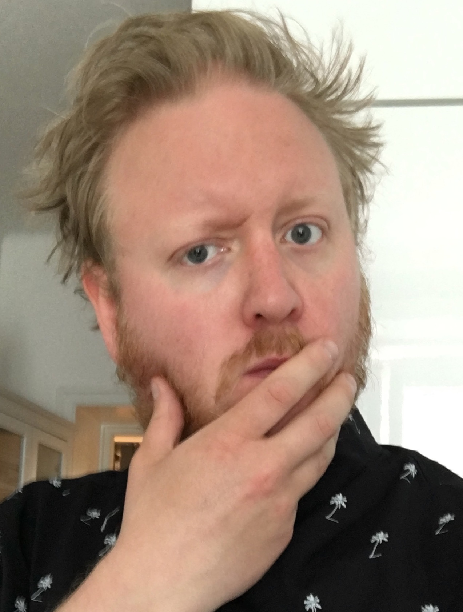

a27 is a person named Andreas "Andy" Eriksson. When growing up he had two big interests, computers and music. After working for fifteen years in the music business as an live audio engineer. He got fed up on beeing on tour, working uncomfortable hours and under stressful conditions. And started to plan how to pursue his dream of start working with his other big interest. Computers. In 2018 he applied to Mobile Application Development at an vocational education school, Nackademin in Stockholm.